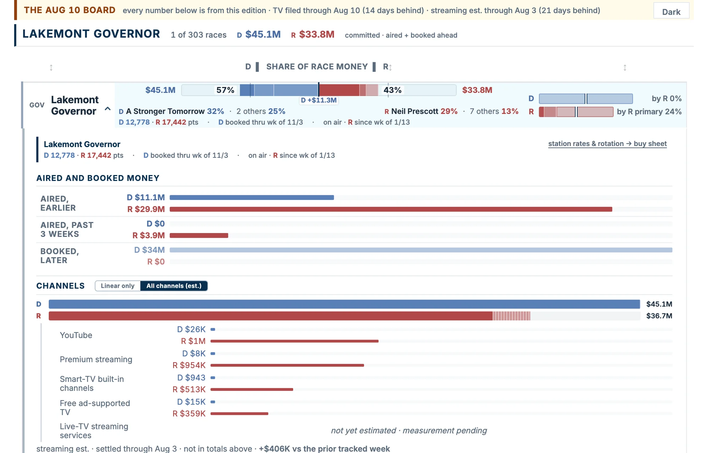

Kinetiq Political Insights
The Most Complete
Political Ad Intelligence
Platform
All 210 markets · ~1.5M ad airings per day · A decade+ of history
KPI tracks political ads and the money behind them — on TV, cable, radio and streaming, in every U.S. media market. When the other side moves, you know the same morning.
See the ads. Follow the dollars.
Four ways in. Each one goes deeper.
Monitoring
Political ads, caught as they air.

synthetic dataTV, cable, radio and streaming, in every market — the alert lands with the tape and the transcript.
What we monitor →The platform
One portal, shaped to your fight.
 synthetic data
synthetic dataScoreboard, Buy Sheet, Creative Matrix and the rest — battle-tested on the 303 races it tracks right now. Every read exports.
See it working →For buyers & sellers
One week, from both sides of the table.
 synthetic data
synthetic dataThree doors up, the buyer’s tools. This one is the seller’s: share of the market, the rate call, and who to call first.
Walk the week →Real-time polling
The poll that never closes.
A 70,000-question library, 10,000+ always in the field. Build the audience from what people actually said.
Ask a question →The two hardest problems in the category
And the standards under all of it: how we count.
The monitoring network
The most complete monitoring operation in politics.
When the other side moves, the machine that catches it is already running.
"A Bloomberg console for campaigns."
Campaigns & Elections, April 2025
Press
The numbers the press prints.
The read that starts a story: which issue overtook which in a state's ads this month, who is being outspent and winning, who went dark this week. Name the race; same day on deadline.
Axios · August 2026
"In 2026, money doesn't always matter"
Axios's primary-money package ran on KPI data across all 17 competitive 2026 Senate primaries.
Read the piece →Inside Radio · August 2026
"Political ad reservations top $1 billion for 2026 midterms"
"Committing $1.2 billion in future media reservations," reported from KPI forward-book data across the 209 federal and state races with forward reservations on file, at the time of that report.
Read the piece →Campaigns & Elections · April 2026
"New Report Forecasts $10 Billion in Midterm Ad Spending"
C&E covered KPI's April forecast; KPI's 2026 forecast stands at $10.4 billion as of August 2026. The same outlet called the platform "a Bloomberg console for campaigns" at launch.
Read the piece →Contact us
See your race on it.
A 20-minute walkthrough on a race you know cold. If the read does not match what you lived, you will know in the first five.
Name a race or a state and we pull it before the walkthrough. Press inquiries: contact press. Subscribers: log in.